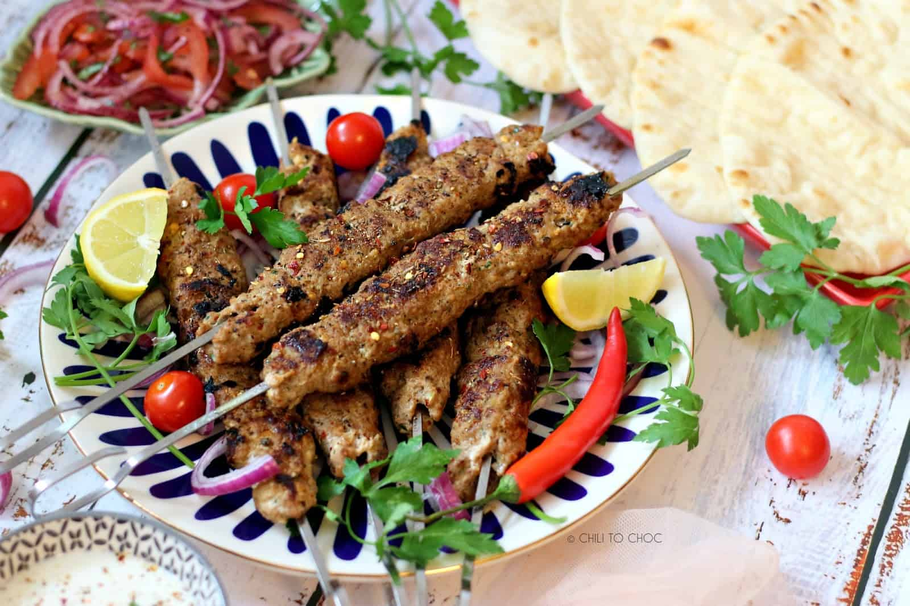

|

|
Ingredients:
- 500g minced lamb or beef
- 1 onion, finely chopped
- 3 cloves garlic, minced
- 2 tbsp fresh parsley, chopped
- 1 tsp ground cumin
- 1 tsp ground coriander
- 1 tsp paprika
- Salt and pepper to taste
- Olive oil for brushing
- Pita bread and salad to serve
|